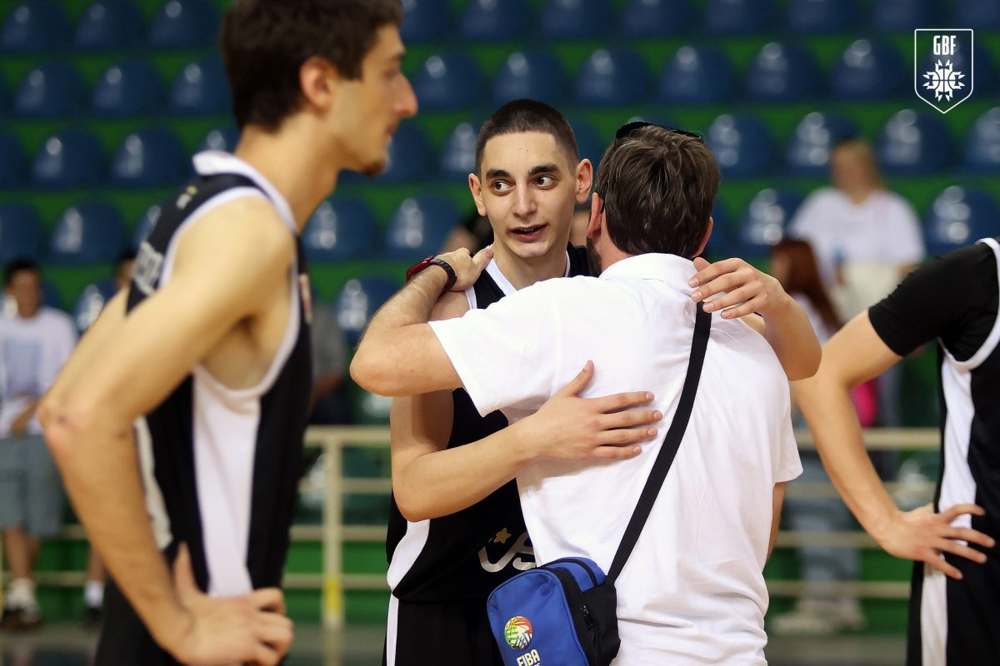
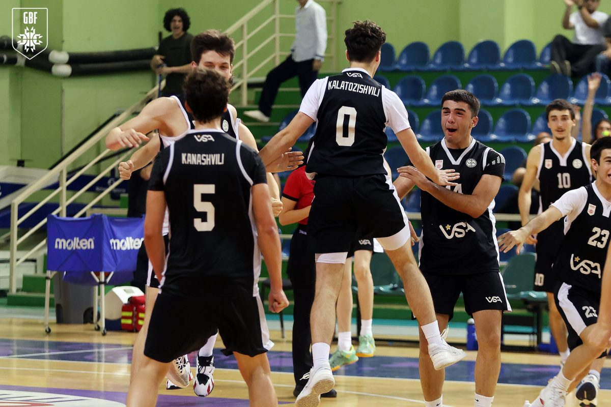
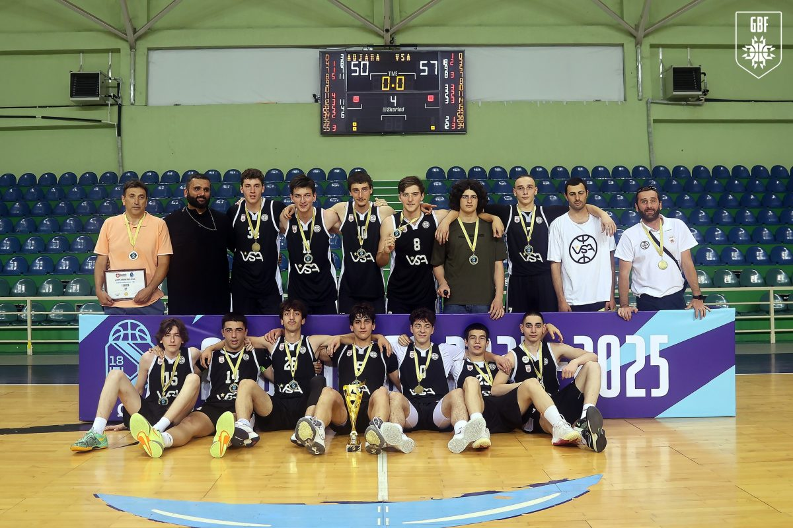
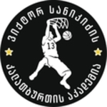

ვიქტორ სანიკიძის აკადემიის კალათბურთელებმა სეზონი 17 მოგებითა და ერთი მარცხით დაასრულეს სეზონი.

გამორჩეული იყო ვსას მხრიდან დავით ჭუაძე სტატისტიკიდან გამომდინარე, რომელიც გუნდს ლიდერობდა მუდმივად. გუნდის საუკეთესო მსროლელი ზაურ კანაშვილი. ორ უკანახაზელს მხარს უმაგრებდნენ მათე გუნიავა და დავით ჩხიტუნიძე. მეხუთე კაცი ლუკა კალატოზიშვილი, რომელიც მუდმივი ტრავმების გამო ჩაანაცვლა გიორგი კვარაცხელიამ. სკამიდან ზუკა კიკნაძე, ალექსანდრე მესხი, ნიკოლოზ შენგელია, დაჩი ღუტიძე, ლუკა ლაცაბიძე. ესაა ჩემპიონის შემადგენლობა

ბათუმმაც არანაკლები ბრძოლა დადო თუმცა ფინალში, რომელიც ერთ თამაშიანი იყო მწვრთნელის დავალებები უფრო ზუსტად შეასრულეს ვსას კალათბურთელებმა და გიორგი ჩხეიძის "ცუდს ბიჭებს" დარჩათ თასი.

სტატისტიკის სანახავად ეწვიეთ საქართველოს კალათუბურთის ფედერაციის ვებგვერდს 57-50 (სტატისტიკა)
